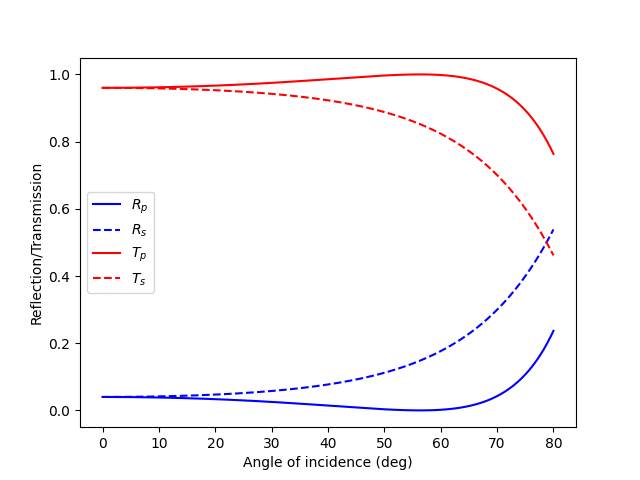
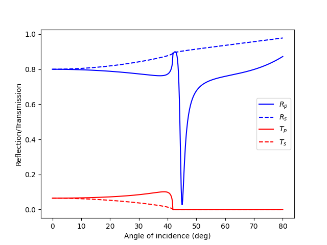
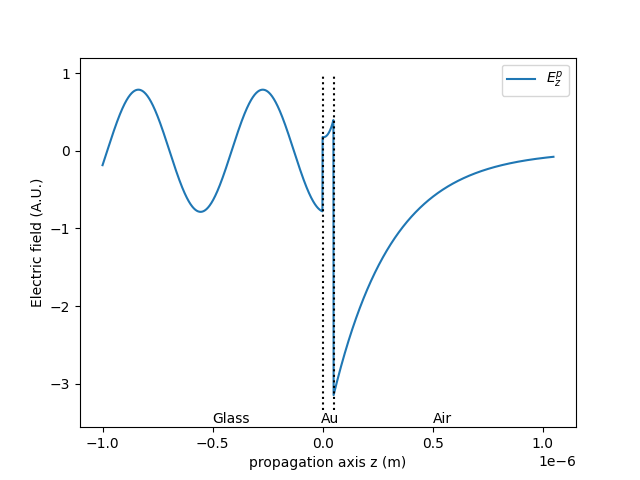

Tutorial¶
Basic usage¶
First example: a single dielectric interface¶
Once the modules are included in your pythonpath you should be able to import them, along with numpy and matplotlib:
import numpy as np
import matplotlib.pyplot as plt
import GTM.GTMcore as GTM
import GTM.Permittivities as mat
We start by creating a new void system (no layers, substrate and superstrate are vacuum):
### Create an empty system
S = GTM.System()
We define the substrate (glass) and the superstrate (air), both 1µm thick (by default). We will use a simple lambda function for the permittivity of glass:
espGlass = lambda x : 1.5**2
Glass = GTM.Layer(epsilon1=epsGlass)
Air = GTM.Layer()
S.set_superstrate(Air)
S.set_substrate(Glass)
We will probe the system at a single wavelength (600nm) as a function of angle of incidence:
lbda = 600e-9 ## wavelength
c_const = 3e8 ## speed of light
f = c_const/lbda ## frequency
theta = np.deg2rad(np.linspace(0.0, 80.0, 500)) ## angle of incidence
We will look at the intensity reflection and transmission coefficients, both in p- and s-polarization:
Rplot = np.zeros((len(theta),2)) ## intensity reflectivity (p- and s-pol)
Tplot = np.zeros((len(theta),2)) ## intensity transmission (p- and s-pol)
for ii, thi in enumerate(theta):
S.initialize_sys(f) # sets the values of the permittivities in all layers
zeta_sys = np.sin(thi)*np.sqrt(S.superstrate.epsilon[0,0]) # in-plane wavevector
Sys_Gamma = S.calculate_GammaStar(f, zeta_sys) # Tranfer matrix of the system
r, R, t, T = S.calculate_r_t(zeta_sys) # all reflection/transmission coefficients
Rplot[ii,0] = R[0] # p-pol reflectivity
Rplot[ii,1] = R[1] # s-pol reflectivity
Tplot[ii,0] = T[0] # p-pol reflectivity
Tplot[ii,1] = T[1] # s-pol reflectivity
And finally we can plot the results:
plt.figure()
plt.plot(np.rad2deg(theta), Rplot[:,0], '-b', label=r'$R_p$')
plt.plot(np.rad2deg(theta), Rplot[:,1], '--b', label=r'$R_s$')
plt.plot(np.rad2deg(theta), Tplot[:,0], '-r', label=r'$T_p$')
plt.plot(np.rad2deg(theta), Tplot[:,1], '--r', label=r'$T_s$')
plt.xlabel('Angle of incidence (deg)')
plt.ylabel('Reflection/Transmission')
plt.legend()
plt.show()
Where we check that p-polarized light experiences total transmission at the Brewster angle.
Second example: surface plasmon polariton¶
Let us now revert the system and use total internal reflection at the glass-air interface. We will insert a thin, 50nm-thick Au layer in the system and probe the existence of a surface plasmon polariton at the Au-air interface.
We first set up the new system:
## Revert the substrate and superstrate
S.set_superstrate(Glass)
S.set_substrate(Air)
## define the Au layer
Au = GTM.Layer(thickness=50e-9, epsilon1=mat.eps_Au)
## Add the Au layer
S.add_layer(Au)
and repeat the code above for p-polarization and s-polarization:
Rplot = np.zeros((len(theta),2)) ## intensity reflectivity (p- and s-pol)
Tplot = np.zeros((len(theta),2)) ## intensity transmission (p- and s-pol)
for ii, thi in enumerate(theta):
S.initialize_sys(f) # sets the values of the permittivities in all layers
zeta_sys = np.sin(thi)*np.sqrt(S.superstrate.epsilon[0,0]) # in-plane wavevector
Sys_Gamma = S.calculate_GammaStar(f, zeta_sys) # Tranfer matrix of the system
r, R, t, T = S.calculate_r_t(zeta_sys) # all reflection/transmission coefficients
Rplot[ii,0] = R[0] # p-pol reflectivity
Rplot[ii,1] = R[1] # s-pol reflectivity
Tplot[ii,0] = T[0] # p-pol reflectivity
Tplot[ii,1] = T[1] # s-pol reflectivity
plt.figure()
plt.plot(np.rad2deg(theta), Rplot[:,0], '-b', label=r'$R_p$')
plt.plot(np.rad2deg(theta), Rplot[:,1], '--b', label=r'$R_s$')
plt.plot(np.rad2deg(theta), Tplot[:,0], '-r', label=r'$T_p$')
plt.plot(np.rad2deg(theta), Tplot[:,1], '--r', label=r'$T_s$')
plt.xlabel('Angle of incidence (deg)')
plt.ylabel('Reflection/Transmission')
plt.legend()
plt.show()
We then observe that at a very particular angle, only p-polarized light experiences a strong reduction in reflection, while no light is being transmitted. This corresponds to the excitation of a surface plasmon polariton at the Au-Air interface.
We can then calculate and plot the electric field at this particular angle:
thetaplot = np.deg2rad(45) ## momentum-matching angle
zeta_plot = np.sin(thetaplot)*np.sqrt(S.superstrate.epsilon[0,0])
zplot, E_out, zn_plot = S.calculate_Efield(f, zeta_plot, dz=1e-9) # get the electric field
plt.figure()
## plot layer boundaries
yl = plt.gca().get_ylim()
for zi in zn_plot:
plt.plot([zi, zi], [yl[0], yl[1]], ':k')
# z-component, p-polarized excitation
plt.plot(zplot, E_out[2,:], label='$E_z^p$')
# make it lisible
plt.text(-0.5e-6, -3.5, 'Glass')
plt.text(-1e-8, -3.5, 'Au')
plt.text(0.5e-6, -3.5, 'Air')
plt.xlabel('propagation axis z (m)')
plt.ylabel('Electric field (A.U.)')
plt.legend()
plt.show()
We observe a strong enhancement of the z-component of the electric field for p-polarized excitation, at the Au-air interface, revealing the surface plasmon polariton.
Examples¶
More examples reproducing the results of the two original papers are available in the examples/ directory.